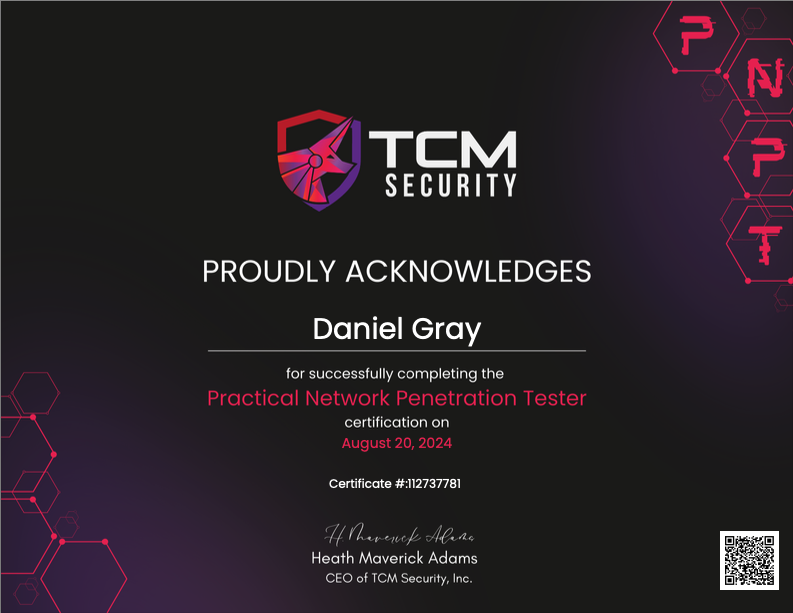
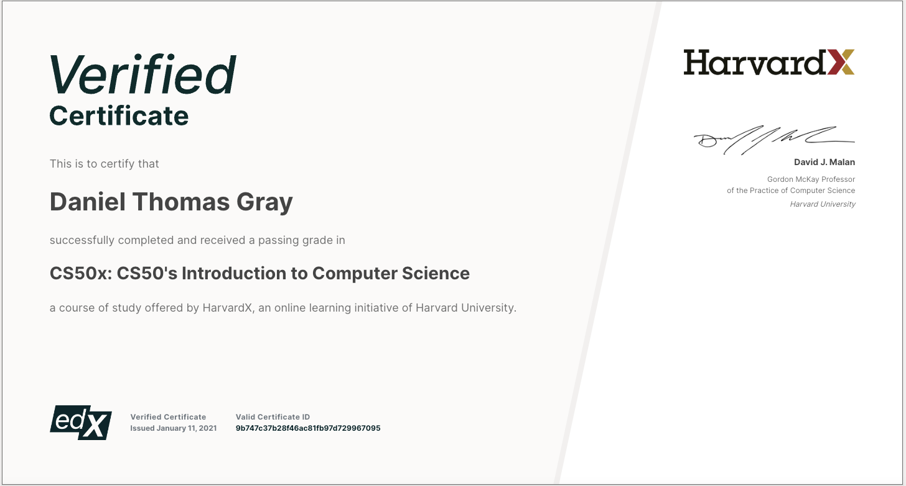

M.S. Computer Science - New York University, 2022
My Master's degree in Computer Science, awarded by New York University in 2022, signifying my advanced understanding and skills in the field.

My Master's degree in Computer Science, awarded by New York University in 2022, signifying my advanced understanding and skills in the field.
This diploma represents my undergraduate degree in Physics, earned from Columbia University in 2011.

A mid-level pen testing certification featuring Active Directory, lateral movement, pivoting in Windows Networks.
But why stop there? I took a few free Harvard classes in Artificial Intelligence, Web Development, and Cybersecurity because they were all brilliantly taught and the assignments were fantastic.
I also have some certificates from TryHackMe, one of the world's most popular Cyber Security Platforms.
This is the exact same intro to CS class that Harvard students take.
CS50’s Introduction to Artificial Intelligence with Python, exploring the concepts of AI and its implementation using Python.

NYU paid for me to get a verified certificate for this class as well, so here is my verified certificate from the same AI class:

A course that dives into the fundamentals of Python programming, providing a solid foundation in the language.

Completion certificate for the Jr. Pen Tester learning pathway on TryHackMe, showcasing skills in penetration testing.